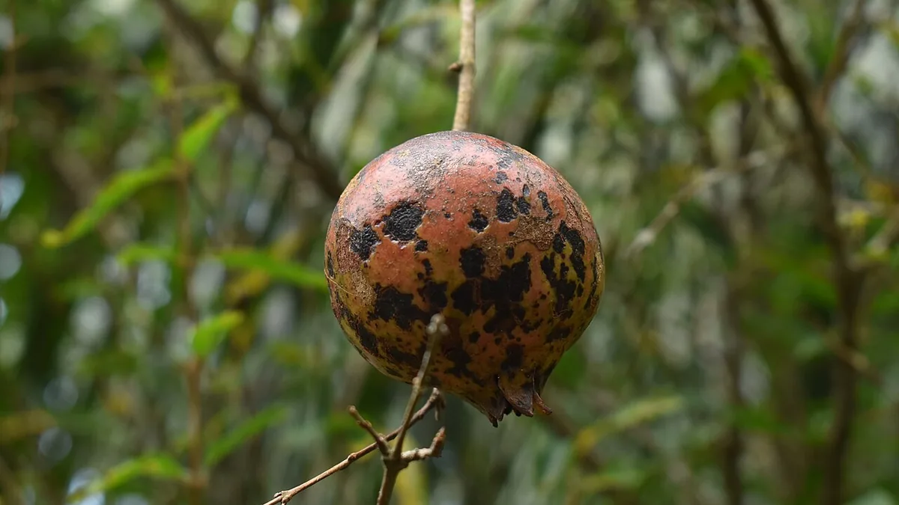

पत्ते पर धूप में तेल की तरह चमकता धब्बा और फल पर आड़ी-खड़ी दरार — यह तेल्या है। यह बुरशी नहीं, जीवाणु है, इसीलिए महीनों बुरशीनाशक डालने पर भी बाग़ नहीं बचता।
✍️ Kunal Rajput — KrashiMitra⏱️ 9 मिनट पढ़ें📅 अगस्त 2026

अनार का पेड़ — तेल्या की मुक्त तस्वीर उपलब्ध नहीं है, इसलिए यहाँ स्वस्थ फल दिखाया गया है; रोग की पहचान लेख की तालिका से कीजिए।
बुरशीनाशक क्यों काम नहीं करता
🦠
जीवाणु
बुरशीनाशक अकेला बेकार
🌡️
28–32°C
80%+ आर्द्रता में विस्फोट
🧪
4 फवारणी
5 दिन के अंतर पर, बदल-बदल कर
📖
भूमिका
डाळिंब के पत्ते पर धूप में चमकता हुआ तेल जैसा पारदर्शी धब्बा दिखे — तो समझ लीजिए बाग़ में तेल्या आ चुका है। कुछ ही हफ़्तों में वही धब्बा फल पर आता है, काला-भूरा पड़ता है, और फल पर आड़ी-खड़ी दरार डालकर उसे फोड़ देता है। सोलापूर, सांगोला, नाशिक, नगर — महाराष्ट्र के हर डाळिंब पट्टे में यही सबसे बड़ा डर है।
सबसे अहम बात, जो बहुत से किसान नहीं जानते: तेल्या बुरशी नहीं, जीवाणु (bacteria) है — Xanthomonas axonopodis pv. punicae। इसीलिए अकेला बुरशीनाशक इस पर काम नहीं करता, और यही वजह है कि लोग महीनों फवारणी करके भी बाग़ नहीं बचा पाते। इस लेख में — पक्की पहचान, यह फैलता कैसे है, विश्रांति काल की सफ़ाई, और चार फवारणी का सही क्रम व मात्रा — सब आसान हिंदी में।
विज्ञापन
🔬
तेल्या है क्या — और यह बुरशी क्यों नहीं है
तेल्या को मराठी में तेलकट डाग, हिंदी में तैलीय धब्बा और अंग्रेज़ी में bacterial blight / oily spot कहते हैं। यह Xanthomonas axonopodis pv. punicae नाम के जीवाणु से होता है।
यह फ़र्क़ सिर्फ़ नाम का नहीं है, पूरे इलाज का है। बुरशीनाशक (fungicide) जीवाणु को नहीं मारता। इसीलिए तेल्या के प्रबंधन में जीवाणुनाशक (bactericide) — जैसे स्ट्रेप्टोमायसिन और ब्रोनोपोल — तथा ताँबेयुक्त (copper) दवाएँ साथ में देनी पड़ती हैं। अकेले बुरशीनाशक पर टिके रहना ही सबसे आम और सबसे महँगी ग़लती है।
💡
यह जीवाणु किन हालात में फूलता है: तापमान 28–32°C और आर्द्रता 80% से ऊपर — यानी ठीक वही मौसम जो जून से सितंबर तक रहता है। बादल, रिमझिम बारिश और उमस — तीनों एक साथ हों, तो तेल्या दिनों में फैलता है।
🔍
पक्की पहचान — स्वस्थ बनाम ग्रस्त
पहचान बिंदु
✅ स्वस्थ
❌ तेल्या ग्रस्त
पत्ता
एक जैसा हरा, चमक बराबर
छोटे पारदर्शी तेल जैसे धब्बे जो धूप में तेल की तरह चमकते हैं; बाद में भूरे-काले, चारों ओर पीला घेरा
फूल और कली
टिकी रहती है, फलधारणा होती है
धूसर-भूरे और गहरे धब्बे पड़कर गळ जाती है
टहनी / फांदी
साफ़, हरी छाल
गहरे तेलिये गोल धब्बे; धब्बा टहनी को घेर ले तो वह जगह से टूट जाती है
फल
चिकना छिलका, एकसार रंग
पहले नन्हे पारदर्शी तेलिये धब्बे, फिर भूरे-काले, और आड़ी-खड़ी दरारें
पका फल
तोड़ने पर साफ़ दाने
दरार से सड़न, फल गळ जाता है
सबसे नाज़ुक अवस्था
—
हरे फल की अवस्था — यहीं संक्रमण सबसे तेज़ी से बैठता है
फल पर पड़ने वाली दरार ही सबसे पक्की पहचान है। अन्य रोगों के धब्बे भी काले पड़ते हैं, पर तेल्या में धब्बे के साथ फल फटता है — और वहीं से पूरा फल जाता है।
विज्ञापन
💨
यह बाग़ में आता कैसे है
बारिश की छींटें: ग्रस्त पत्ते या फल पर गिरी बूँद उछलकर बग़ल के पेड़ पर जाती है — यही सबसे तेज़ रास्ता है।
हवा के साथ बौछार: तेज़ हवा वाली बारिश जीवाणु को पूरे बाग़ में बिखेर देती है।
ग्रस्त कलम और रोपण सामग्री: नई बाग़ में रोग अक्सर नर्सरी से ही आता है। कलम हमेशा भरोसेमंद, रोगमुक्त स्रोत से लीजिए।
छँटाई के औज़ार: एक ग्रस्त टहनी काटकर वही कैंची अगले पेड़ पर चलाना — यह पूरे बाग़ को संक्रमित कर देता है।
बाग़ में पड़ा ग्रस्त कचरा: गिरे हुए पत्ते, फल और कटी टहनियाँ जीवाणु का ठिकाना बनी रहती हैं।
गीले बाग़ में आवाजाही: बारिश या फवारणी के तुरंत बाद पेड़ों के बीच घूमने से कपड़े और हाथ भी वाहक बन जाते हैं।
✂️
छँटाई का नियम: ग्रस्त टहनी को धब्बे से लगभग 2 इंच नीचे से काटिए, और हर एक कट के बाद औज़ार को 1% डेटॉल के घोल में डुबोकर निर्जंतुक कीजिए। एक कट की लापरवाही पूरे मौसम पर भारी पड़ती है।
🛡️
विश्रांति काल की सफ़ाई — बिना दवा का सबसे बड़ा काम
तेल्या का असली प्रबंधन फवारणी में नहीं, बहार लेने से पहले के विश्रांति काल में होता है। इस समय बाग़ में जीवाणु की संख्या जितनी घटा दी जाए, पूरा मौसम उतना आसान बीतता है।
ग्रस्त हिस्सा पूरी तरह निकालिए: रोगग्रस्त टहनियाँ धब्बे से 2 इंच नीचे काटिए, और गिरे पत्ते-फल तथा कटा हुआ सारा कचरा बाग़ से बाहर ले जाकर नष्ट कीजिए। बाग़ में ढेर मत लगाइए।
ब्लीचिंग पावडर डालिए: पेड़ों के थाळे के आसपास प्रति हेक्टेयर लगभग 20 किलो ब्लीचिंग पावडर — इससे मिट्टी में बचे जीवाणु की संख्या घटती है।
छँटाई के बाद तुरंत फवारणी:बोर्डो मिश्रण 1% या 500 ppm का जीवाणुनाशक — यह कटे हुए हिस्सों को ढक देता है।
बाग़ में पानी जमा मत होने दीजिए: निकास ठीक कीजिए; जमा नमी सीधे जीवाणु का साथ देती है।
छँटाई और फवारणी सूखे दिन में कीजिए: बारिश से ठीक पहले किया गया काम धुल जाता है और ताज़ा कटे हिस्से खुले रह जाते हैं।
🌸
बहार का चुनाव भी एक उपाय है।मृग बहार (जून) में फलधारणा ठीक बारिश और उमस के दौर में पड़ती है, इसलिए तेल्या का दबाव सबसे ज़्यादा रहता है। आंबिया और हस्त बहार में यह दबाव कम रहता है। जिन बाग़ों में तेल्या का इतिहास है, वहाँ बहार बदलने पर ही सबसे बड़ा फ़र्क़ पड़ता है — पर यह फ़ैसला बाज़ार और पानी दोनों देखकर लेना चाहिए।
🧪
फवारणी का क्रम — चार छिड़काव, 5 दिन के अंतर पर
तेल्या में एक ही दवा बार-बार डालने से जीवाणु में प्रतिरोध बन जाता है। इसीलिए सिफ़ारिश क्रम बदल-बदल कर चार छिड़काव की है, हर बार 5 दिन के अंतर पर। तीनों साथी घटक — स्ट्रेप्टोमायसिन, ब्रोनोपोल और स्प्रेडर-स्टिकर — हर छिड़काव में वही रहते हैं; सिर्फ़ मुख्य दवा बदलती है।
क्रम
बदलने वाली मुख्य दवा
मात्रा / लीटर पानी
पहली फवारणी
कॉपर हायड्रॉक्साइड
2 ग्राम
दूसरी फवारणी
कार्बेन्डाजिम
1 ग्राम
तीसरी फवारणी
कॉपर ऑक्सिक्लोराइड
2.5 ग्राम
चौथी फवारणी
मॅन्कोझेब 75%
2 ग्राम
🧴
ऊपर की हर फवारणी में ये तीनों वही रहते हैं — सिर्फ़ मुख्य दवा बदलती है:
स्ट्रेप्टोमायसिन 0.3 ग्राम + ब्रोनोपोल 0.5 ग्राम + स्प्रेडर-स्टिकर 0.5 मि.ली. प्रति लीटर पानी।
स्प्रेडर छोड़ देना आम ग़लती है — उसके बिना घोल पत्ते की चिकनी सतह पर टिकता ही नहीं।
इसके साथ काम आने वाले विकल्प:
बोर्डो मिश्रण: फलधारणा के दौरान 0.5%, और विश्रांति काल में 1%।
अंतराल: सामान्य स्थिति में 7–10 दिन; लक्षण दिखते ही 4 दिन के अंतर पर तत्काल फवारणी।
तोड़ाई से पहले रोकिए: काढणी से 30 दिन पहले फवारणी बंद कर दीजिए — बारिश के मौसम में यह अंतर 20 दिन रखा जाता है।
⚠️
यह हिस्सा ध्यान से पढ़िए। कोई भी दवा ख़रीदने से पहले उसका CIB&RC लेबल देखिए और यह पक्का कीजिए कि उस पर डाळिंब और तेल्या रोग का उल्लेख है। खेती में एंटीबायोटिक (स्ट्रेप्टोमायसिन) के उपयोग पर नियम समय-समय पर बदलते हैं, इसलिए इसे मनमाने ढंग से या सिफ़ारिश से ज़्यादा मात्रा में मत डालिए। निर्यात के लिए फल भेज रहे हों तो अवशेष (residue) की सीमा और प्रतीक्षा काल का पालन अनिवार्य है। अंतिम सलाह अपने KVK, राष्ट्रीय डाळिंब संशोधन केंद्र (सोलापूर) या तालुका कृषी अधिकारी से ही लीजिए।
🚫
ये गलतियाँ कभी न करें
सिर्फ़ बुरशीनाशक पर भरोसा करना — तेल्या जीवाणु है। बिना जीवाणुनाशक और ताँबेयुक्त दवा के वह नहीं रुकेगा, चाहे कितनी फवारणी कर लीजिए।
औज़ार निर्जंतुक किए बिना छँटाई करना — एक कैंची पूरे बाग़ में रोग बाँट देती है। हर कट के बाद 1% डेटॉल में डुबोइए।
कटा हुआ कचरा बाग़ में ही छोड़ देना — वही अगले मौसम का संक्रमण स्रोत बनता है।
लक्षण दिखने के बाद ही शुरू करना — तेल्या पर काम रोकथाम का है। धब्बे दिखने का मतलब है जीवाणु पहले ही फैल चुका है।
एक ही दवा बार-बार डालना — प्रतिरोध बन जाता है; इसीलिए चार छिड़काव का क्रम बदल-बदल कर है।
तोड़ाई के ठीक पहले फवारणी करना — 30 दिन (बारिश में 20 दिन) का प्रतीक्षा काल अवशेष के लिए ज़रूरी है, ख़ासकर निर्यात के माल में।
ग्रस्त बाग़ से कलम लेकर नई बाग़ लगाना — रोग सीधे नई बाग़ में चला जाता है।
बाग़ में पानी जमा रहने देना — उमस जीवाणु की सबसे पसंदीदा चीज़ है।
🗓️
कब क्या करें
अवस्था
ज़रूरी काम
विश्रांति काल (बहार से पहले)
ग्रस्त टहनियों की छँटाई, कचरा नष्ट, थाळे में ब्लीचिंग पावडर ~20 किलो/हेक्टेयर
छँटाई के तुरंत बाद
बोर्डो मिश्रण 1% या 500 ppm जीवाणुनाशक की फवारणी
बहार धरते समय
निकास ठीक करें; रोगमुक्त कलम ही लगाएँ
फूल व फलधारणा
7–10 दिन के अंतर पर रोकथाम की फवारणी; बोर्डो 0.5%
हरे फल की अवस्था
सबसे नाज़ुक समय — निगरानी रोज़, ढील बिल्कुल नहीं
लक्षण दिखते ही
चार फवारणी का क्रम, 5 दिन के अंतर पर; ज़रूरत हो तो 4 दिन का अंतर
जून–सितंबर (28–32°C, 80%+ आर्द्रता)
सबसे ज़्यादा ख़तरा — बादल-रिमझिम के बाद बाग़ ज़रूर देखें
काढणी से 30 दिन पहले
फवारणी बंद (बारिश के मौसम में 20 दिन)
✅
निष्कर्ष
तीन बातें याद रखिए। पहली — तेल्या जीवाणुजन्य रोग है, इसलिए अकेला बुरशीनाशक बेकार है; जीवाणुनाशक और ताँबेयुक्त दवा साथ चाहिए। दूसरी — असली लड़ाई विश्रांति काल में जीती जाती है: छँटाई, कचरा नष्ट, ब्लीचिंग पावडर और औज़ार का निर्जंतुकीकरण। तीसरी — चार फवारणी का क्रम बदल-बदल कर कीजिए, और काढणी से 30 दिन पहले रोक दीजिए।
तेल्या दवा से नहीं, साफ़ बाग़ से रुकता है — दवा तो सिर्फ़ उस सफ़ाई को टिकाए रखती है।
⚠️
हर दवा, मात्रा और अंतराल अपने बाग़ पर लागू करने से पहले दवा का CIB&RC लेबल पढ़िए और अपने KVK, राष्ट्रीय डाळिंब संशोधन केंद्र (सोलापूर) या तालुका कृषी अधिकारी से पुष्टि कीजिए — बहार, मौसम और बाग़ की उम्र के हिसाब से सलाह बदलती है। निर्यात के लिए भेजे जाने वाले फल में अवशेष सीमा का पालन अनिवार्य है।
विज्ञापन
❓
अक्सर पूछे जाने वाले सवाल
1डाळिंब का तेल्या रोग किससे होता है?
तेल्या Xanthomonas axonopodis pv. punicae नाम के जीवाणु (bacteria) से होता है — यह बुरशी नहीं है। यही वजह है कि अकेला बुरशीनाशक इस पर काम नहीं करता, और इलाज में जीवाणुनाशक (स्ट्रेप्टोमायसिन, ब्रोनोपोल) तथा ताँबेयुक्त दवाएँ साथ में देनी पड़ती हैं।
2डाळिंब में तेल्या की पहचान कैसे करें?
सबसे पक्की पहचान है पत्ते पर तेल जैसे पारदर्शी धब्बे जो धूप में तेल की तरह चमकते हैं, और आगे चलकर भूरे-काले पड़ जाते हैं। फल पर पहले वैसे ही नन्हे तेलिये धब्बे आते हैं, फिर वे काले होकर आड़ी और खड़ी दरारें डाल देते हैं — यही दरार तेल्या को बाक़ी रोगों से अलग करती है।
3तेल्या रोग के लिए कौन सी फवारणी करें और कितनी मात्रा?
सिफ़ारिश है चार फवारणी, 5 दिन के अंतर पर, दवा बदल-बदल कर — (1) कॉपर हायड्रॉक्साइड 2 ग्राम, (2) कार्बेन्डाजिम 1 ग्राम, (3) कॉपर ऑक्सिक्लोराइड 2.5 ग्राम, (4) मॅन्कोझेब 75% 2 ग्राम। हर बार साथ में स्ट्रेप्टोमायसिन 0.3 ग्राम + ब्रोनोपोल 0.5 ग्राम + स्प्रेडर 0.5 मि.ली. प्रति लीटर पानी। दवा का लेबल पढ़कर और KVK से पुष्टि करके ही इस्तेमाल कीजिए।
4तेल्या में किस तापमान और आर्द्रता में सबसे ज्यादा खतरा होता है?
तापमान 28–32°C और आर्द्रता 80% से ऊपर होने पर यह जीवाणु सबसे तेज़ी से बढ़ता है — यानी जून से सितंबर तक का बादल, रिमझिम और उमस वाला मौसम। हरे फल की अवस्था सबसे नाज़ुक होती है, इसलिए उस दौर में बाग़ की निगरानी रोज़ करनी चाहिए।
5तेल्या रोग के लिए ब्लीचिंग पावडर कितनी डालें?
विश्रांति काल में पेड़ों के थाळे के आसपास प्रति हेक्टेयर लगभग 20 किलो ब्लीचिंग पावडर डालने की सिफ़ारिश है — इससे मिट्टी में बचे जीवाणुओं की संख्या घटती है। यह काम छँटाई और कचरा नष्ट करने के साथ मिलकर पूरे मौसम का दबाव कम कर देता है।
6तेल्या ग्रस्त टहनी कितनी नीचे से काटनी चाहिए?
ग्रस्त टहनी को धब्बे से लगभग 2 इंच नीचे से काटिए, ताकि जीवाणु वाला हिस्सा पूरा निकल जाए। सबसे ज़रूरी बात — हर एक कट के बाद औज़ार को 1% डेटॉल के घोल में डुबोकर निर्जंतुक कीजिए, वरना वही कैंची पूरे बाग़ में रोग बाँट देगी। छँटाई के बाद बोर्डो 1% या 500 ppm जीवाणुनाशक की फवारणी कीजिए।
7तेल्या के लिए कौन सा बहार लेना ठीक रहता है?
मृग बहार (जून) में तेल्या का दबाव सबसे ज़्यादा रहता है, क्योंकि फलधारणा ठीक बारिश और उमस के दौर में पड़ती है। आंबिया और हस्त बहार में यह दबाव कम रहता है। जिन बाग़ों में तेल्या का पुराना इतिहास है, वहाँ बहार बदलने से सबसे बड़ा फ़र्क़ पड़ता है — पर यह फ़ैसला पानी की उपलब्धता और बाज़ार दोनों देखकर लेना चाहिए।
8काढणी से कितने दिन पहले फवारणी बंद कर देनी चाहिए?
काढणी से 30 दिन पहले फवारणी बंद कर देनी चाहिए; बारिश के मौसम में यह अंतर 20 दिन रखा जाता है। यह प्रतीक्षा काल फल में दवा के अवशेष (residue) को घटाने के लिए है — और निर्यात के लिए भेजे जाने वाले डाळिंब में इसका पालन अनिवार्य है, वरना पूरी खेप ख़ारिज हो सकती है।
🌾
KrashiMitra.in — आपका विश्वसनीय कृषि साथी
मंडी भाव, सरकारी योजनाएं, बीज-खाद की जानकारी और फसल रोग उपचार — सब कुछ हिंदी में।